In this project, I explored the threat environment by building a functional port scanner in Python and leveraging industry-standard tools like Nmap to understand network vulnerabilities. I analyzed how ports function as endpoints for network communication and investigated real-world security threats through current threat intelligence sources.
The Internet Protocol Suite (TCP/IP) forms the backbone of modern networking. Every host and service communicates through a combination of an IP address and a port number. With 65,536 distinct port numbers available, understanding which ports are open and why they're exposed is critical to maintaining network security.
Port: A numbered endpoint through which applications communicate across a network. Ports range from 0 to 65,535, with each number reserved for specific services or applications.
Port Scanner: A software tool that probes servers and hosts to identify open ports. While port scanning itself is a legitimate network administration function, it's also a common reconnaissance technique used by attackers to identify running services and potential vulnerabilities.
Port Sweep: A scanning technique that targets multiple hosts to find a specific listening port—often used to locate machines running a particular service across a network.
I developed a streamlined Python port scanner, keeping the code under 50 lines while demonstrating core networking concepts. The tool probes a target host across a range of ports and reports which ones respond.
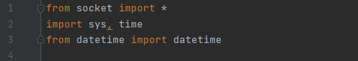
I imported the socket module to access low-level networking functions, sys for command-line handling, time for delays, and datetime for timestamping the scan.
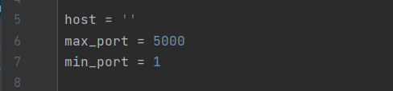
I defined the core settings: target host, port range (1 to 5000), and output formatting. This configuration is easily adjustable for different scanning scenarios.
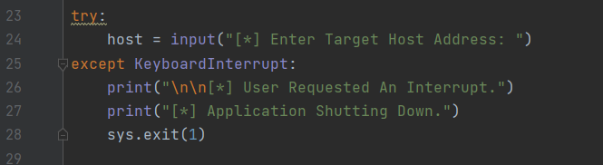
The program prompts the user for a target host address, which can be a domain name or IP address. I implemented error handling to gracefully manage keyboard interrupts (Ctrl+C) without crashing.
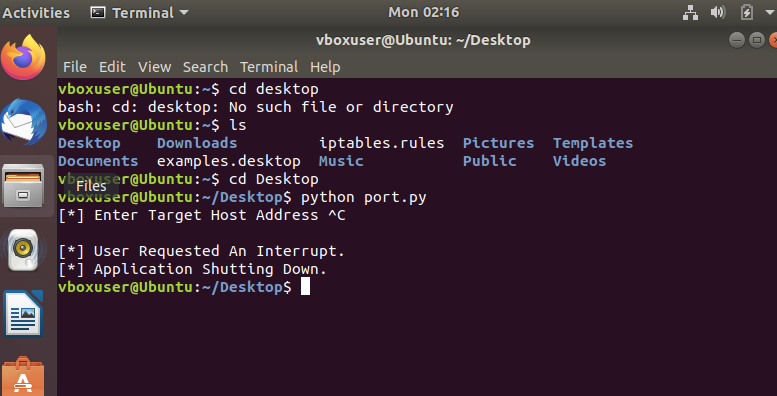
I tested the KeyboardInterrupt handling by running the scanner and pressing Ctrl+C. The program gracefully displays “User Requested An Interrupt” and “Application Shutting Down” messages before exiting cleanly.
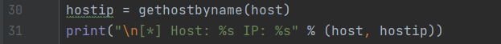
I used the gethostbyname() function to resolve the domain name or hostname into its numeric IP address, which is then displayed to the user.
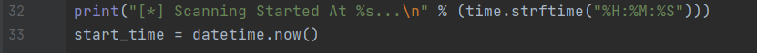
I captured the current system time at the start of the scan using datetime.now() and printed a “Scanning Started At” message with time.strftime(), providing a timestamp for the security assessment.
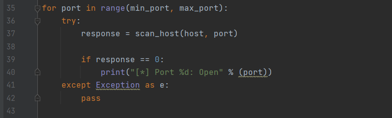
The core scanning loop iterates through each port in the specified range (1 to 5000). For each port, I call the scan_host() function and handle responses with try-except blocks to prevent errors from terminating the scan.
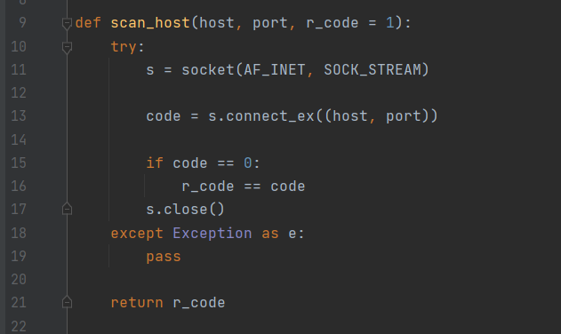
This function leverages Python’s socket library to attempt a direct TCP connection to the target host on a given port. It returns 0 if the connection succeeds (open port) or 1 if it fails (closed/filtered port). The socket is properly closed after each attempt.
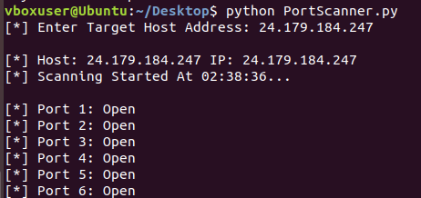
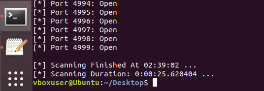
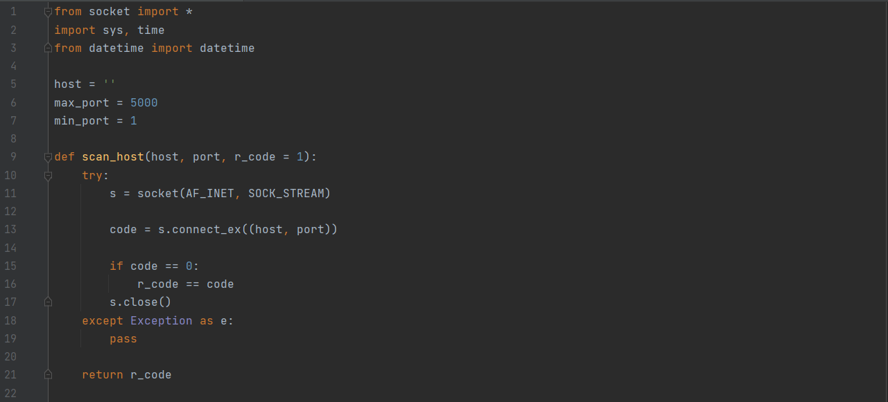
I executed the scanner against a test environment and observed open ports being identified and reported in real time. The scan covered ports 1–4999 and completed in approximately 25.6 seconds.
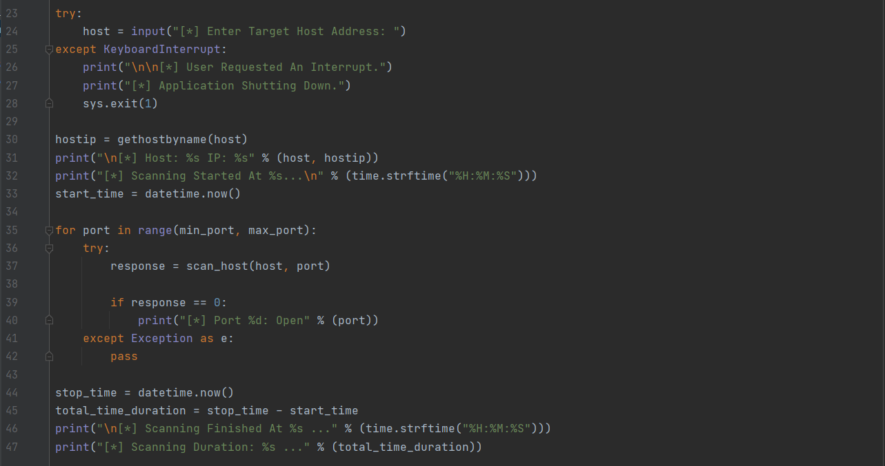
Here is the full, working implementation of the port scanner combining all components: imports, configuration, the scan_host() function definition, user input with error handling, DNS resolution, timestamping, and the main scanning loop with duration reporting.
I used Nmap (Network Mapper), the industry-standard port scanning tool, to perform comprehensive network reconnaissance. Nmap provides advanced capabilities including operating system detection, service identification, and network visualization.
Nmap is widely used by IT security professionals to verify network security policies and identify active services. It supports graphical interfaces (Zenmap) and command-line operations across Windows, macOS, and Linux platforms.
I configured Nmap to scan target systems on my network, analyzing the results across three key views:
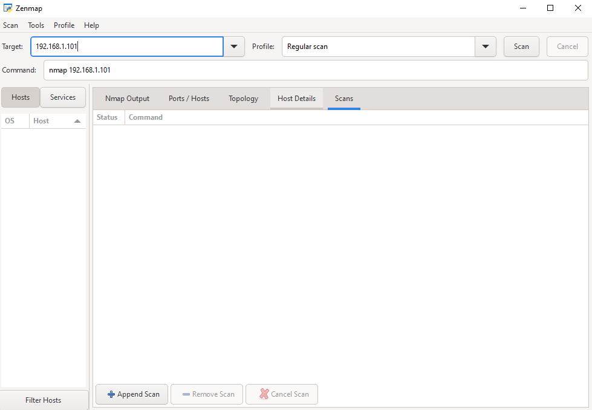
I entered the target IP address into Nmap’s Target field and selected a Regular Scan profile to execute a standard port discovery scan.
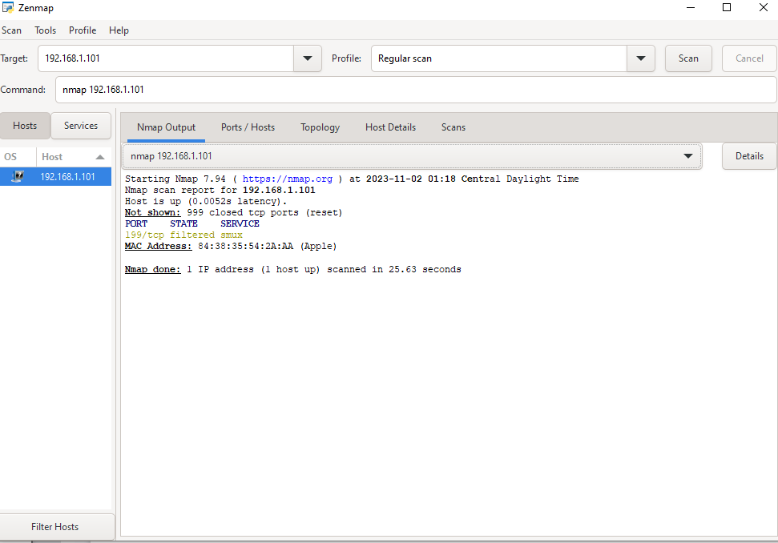
The scan completed and displayed a summary of open, closed, and filtered ports on the target host.
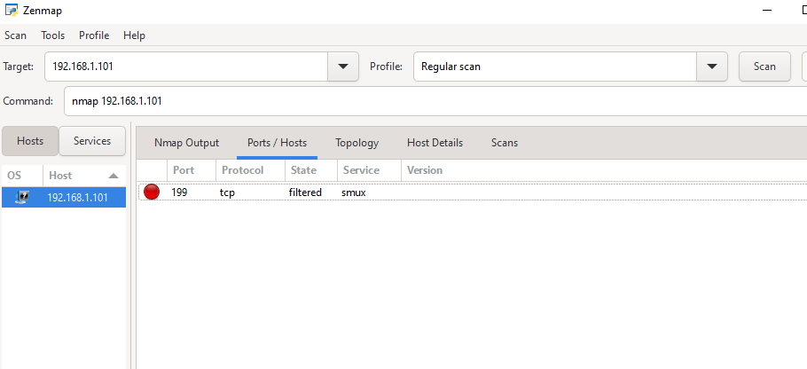
I reviewed the detailed Ports/Hosts tab to see exactly which services were listening on which port numbers.
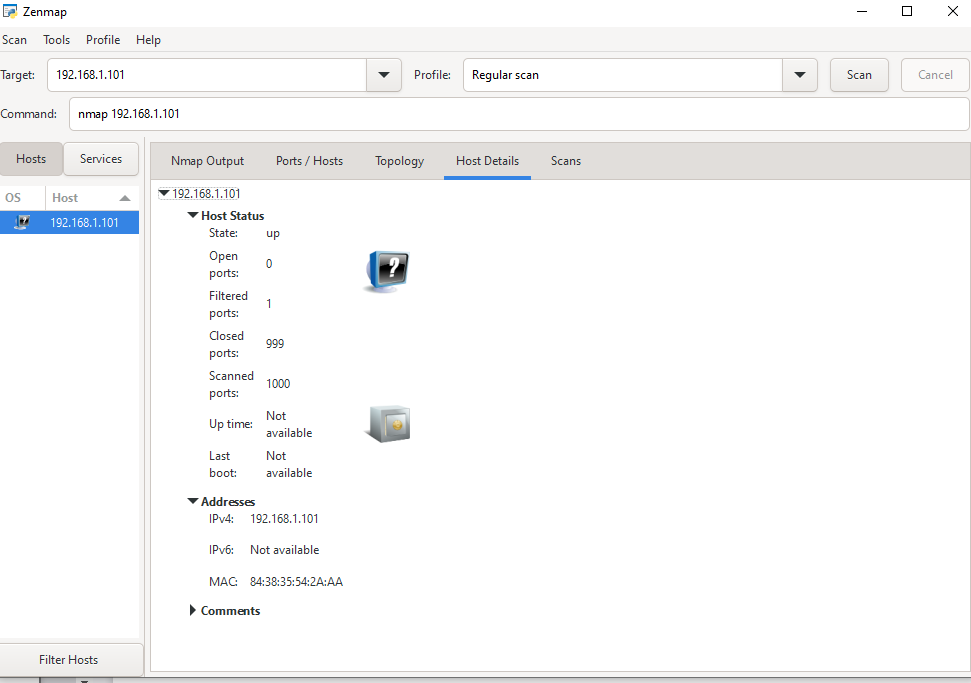
The Host Details tab provided deeper insights into the target system, including detected operating system fingerprints and service versions.
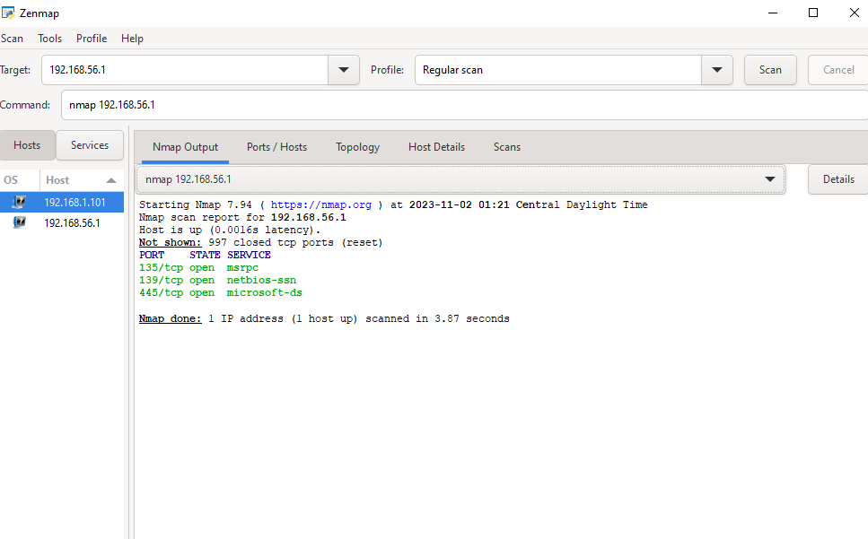
I scanned a peer system (192.168.56.1) with permission, discovering open ports for Microsoft services (MSRPC, NetBIOS, and Microsoft-DS), demonstrating how different systems expose different port profiles.
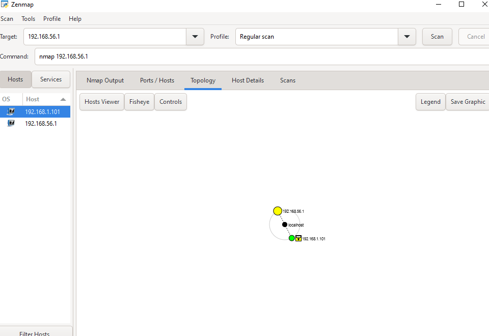
The Topology tab in Zenmap provided a visual network map showing the relationship between scanned hosts (192.168.56.1 and 192.168.1.101) and the localhost scanner, illustrating the network layout at a glance.
To understand the threat environment beyond technical tools, I researched current security threats and vulnerabilities through established security news sources.
I reviewed articles from leading security publications to stay current on emerging threats:
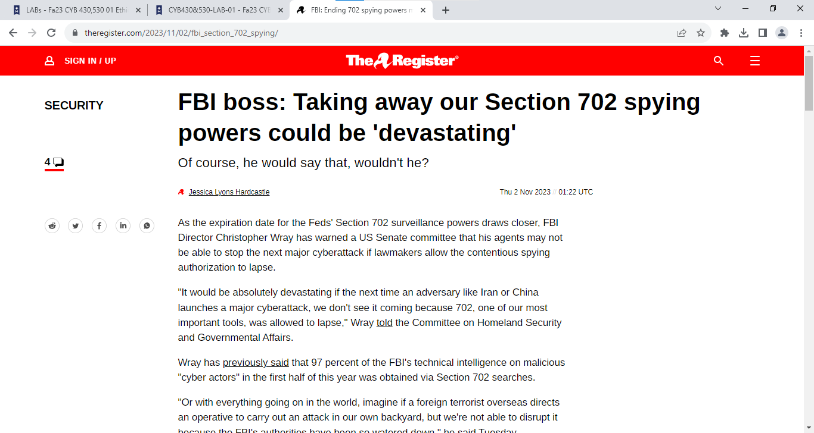
I reviewed an article from The Register covering the FBI’s position on Section 702 surveillance powers and their role in preventing cyberattacks, highlighting the intersection of policy and cybersecurity defense.
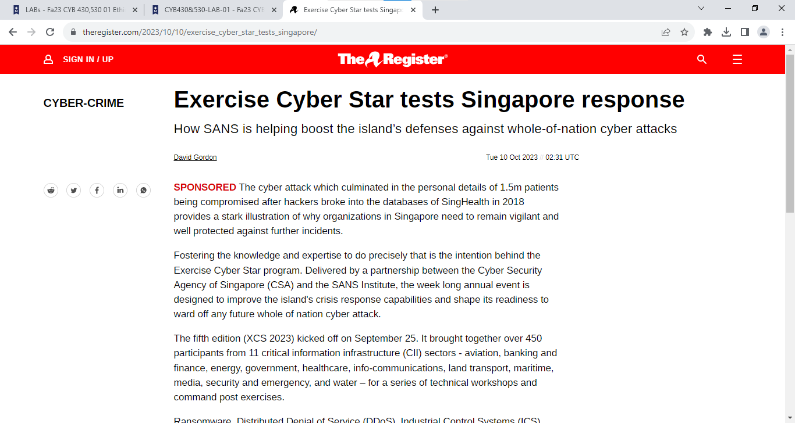
I reviewed The Register’s coverage of Singapore’s Exercise Cyber Star program—a national-scale cybersecurity exercise involving DDoS, ransomware, and industrial control system attack scenarios—demonstrating how nations prepare for coordinated cyber threats.
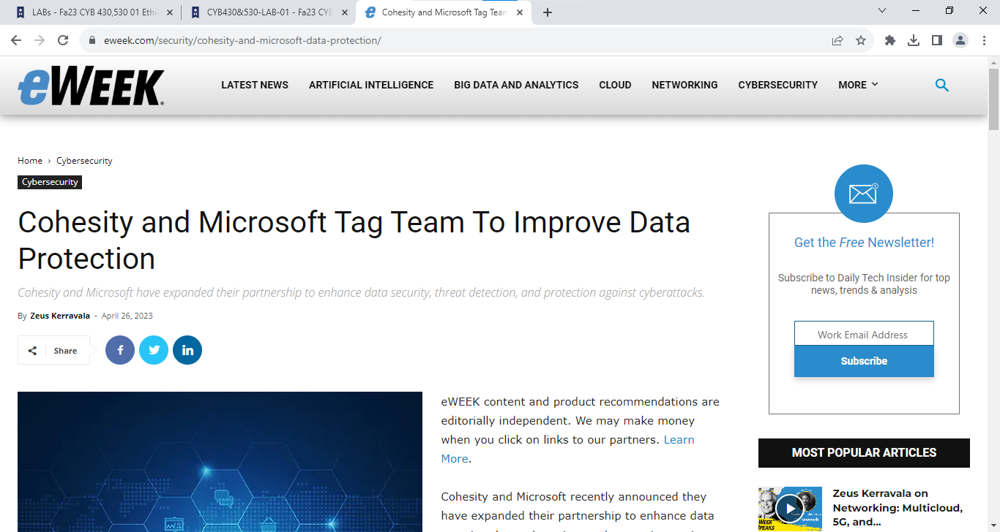
I reviewed eWeek’s coverage of the Cohesity and Microsoft partnership to enhance data security, threat detection, and protection against cyberattacks—illustrating how industry collaborations strengthen enterprise defense.
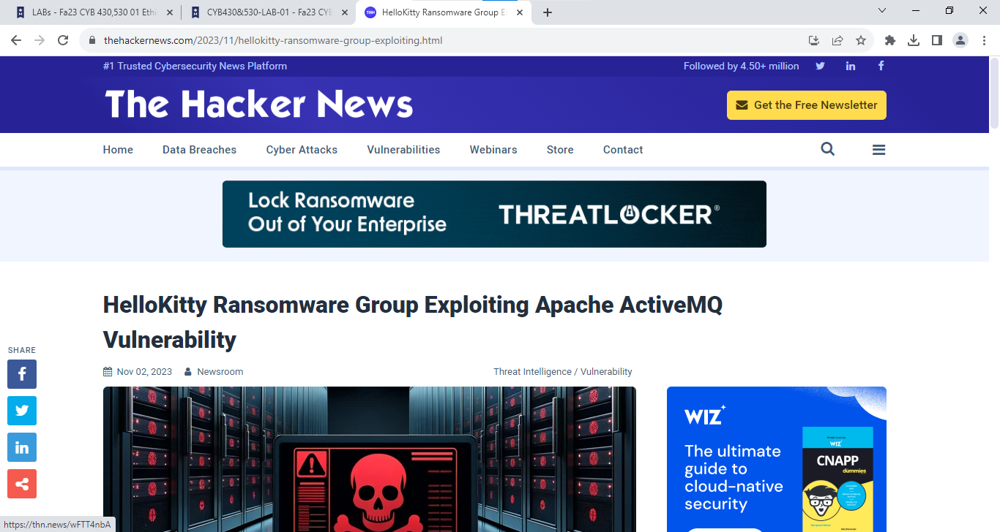
I explored The Hacker News’ coverage of the HelloKitty ransomware group exploiting an Apache ActiveMQ vulnerability, demonstrating how threat actors leverage unpatched services—directly connecting to the port security principles examined earlier in this project.
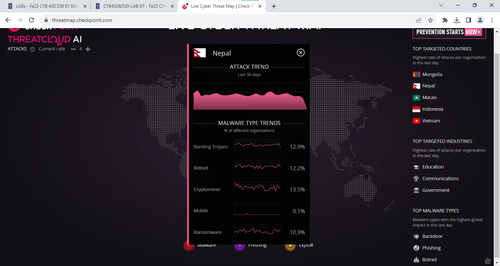
I analyzed real-time threat data from CheckPoint’s ThreatCloud AI, which visualizes global cyberattacks by country. The dashboard shows malware type trends (Banking Trojans at 12.9%, Botnets at 12.2%, Cryptominers at 13.5%, Ransomware at 10.9%) and identifies top targeted countries and industries, providing actionable insight into the current threat landscape.
Through both custom scanning and Nmap analysis, I gained insight into port security principles:
From my research and scans, I observed these standard port assignments:
| Port | Service | Protocol |
|---|---|---|
| 80 | HTTP | Web Traffic |
| 443 | HTTPS | Secure Web Traffic |
| 22 | SSH | Secure Shell |
| 25 | SMTP | Email Transmission |
| 21 | FTP | File Transfer |
| 3389 | RDP | Remote Desktop |
Open ports can be exploited for: - Malware Delivery: If a service running on an open port has a known vulnerability, attackers can exploit it to execute malicious code - Unauthorized Access: Unpatched services can allow attackers to gain system access - Lateral Movement: Once inside, attackers can use open ports to move between systems
To secure systems, I learned to: 1. Identify which ports are actively in use using scanning tools 2. Disable or stop services that are not required 3. Implement firewall rules to restrict traffic to only necessary ports 4. Maintain regular patching and updates to close vulnerabilities 5. Monitor for suspicious connection attempts
Reviewing security news provides: - Threat Awareness: Understanding emerging attack techniques and common vulnerabilities - Vulnerability Prioritization: Learning about zero-days and actively exploited CVEs to prioritize patching - Incident Response Readiness: Studying current threats informs my defensive strategies - Best Practice Integration: Security publications share proven mitigation techniques - Regulatory Alignment: Understanding compliance requirements and industry standards
This project solidified my understanding of network fundamentals and threat assessment. Port scanning is a foundational skill in cybersecurity—both for defensive network hardening and offensive security assessment. By combining hands-on tool experience with current threat intelligence, I developed a practical understanding of how the threat environment evolves and how to proactively identify and mitigate network risks.
The ability to identify open ports, understand the services running on them, and correlate those services to known vulnerabilities is essential for any security professional responsible for network defense.